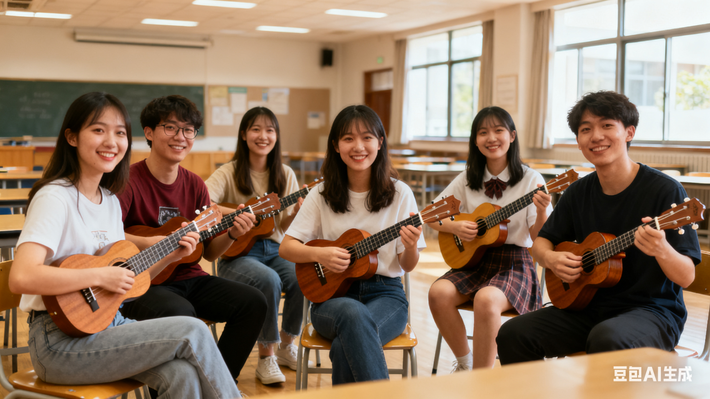

社团简介 | 活动安排 | 风采展示 | 社员故事 | 在线报名
在充满活力与创意的校园里，总有一群人因对音乐的热爱而相聚，用指尖的跃动传递温暖与激情。 尤克里里社团，便是这样一方充满艺术气息的天地。 作为以夏威夷四弦琴——尤克里里为核心的音乐团体，我们以“轻享音乐，快乐共鸣”为宗旨，致力于为成员提供学习、交流与展示的平台，让每一个热爱音乐的人都能在这里找到属于自己的舞台，用琴弦编织青春的旋律。 尤克里里社团成立于2015年，最初由几位热爱尤克里里的学生发起。 他们因一次偶然的街头表演结缘，被这种小巧便携、音色清亮的乐器所吸引，决定成立一个专属的交流空间。 从最初的几人小团体，到如今覆盖全校、辐射周边社区的百人社团，我们经历了从“兴趣小组”到“品牌社团”的蜕变。
在尤克里里社团，“音乐无门槛”是我们的核心理念。 无论你是零基础的新手，还是技艺娴熟的乐手，都能在这里找到归属感。 我们倡导“快乐学习”，拒绝功利化竞争，鼓励成员在轻松的氛围中享受音乐带来的纯粹喜悦。 社团内部形成了一种独特的“家文化”。 成员们不仅是音乐伙伴，更是生活中的朋友。 生日惊喜、节日派对、户外露营……这些活动让社团成为大家释放压力、分享生活的港湾。 许多成员表示，加入社团后不仅提升了琴技，更收获了珍贵的友谊与成长。
社团采用“分层教学”模式，根据成员水平开设初级、中级、高级班，内容涵盖基础指法、和弦转换、弹唱技巧到指弹独奏等。 每周固定开展集体练习，并邀请专业乐手进行线上或线下讲座，帮助成员快速提升。 鼓励成员尝试原创编曲，将流行、民谣、古典甚至电子音乐元素融入尤克里里演奏。 社团设立“原创音乐基金”，支持优秀作品录制与发布，多首成员创作的曲目在音乐平台获得广泛关注。 社团定期走进社区、养老院、特殊教育学校，用音乐传递温暖。 疫情期间，成员们通过线上直播为隔离人员演奏，相关视频被多家媒体转载，展现了青年学子的社会责任与艺术担当。
在这个充满活力的春季学期，尤克里里社团为社员们精心策划了一系列丰富多彩的活动，旨在提升大家的演奏技巧，拓宽音乐视野，同时增进彼此间的友谊与团队合作。 以下是我们本学期的详细活动安排（具体时间可能会根据学校统一安排略作调整，详情请关注社团通知）：
| 尤克里里社 2025 年春季学期活动安排表 | |||
|---|---|---|---|
| 活动名称 | 活动时间 | 活动地点 | 负责人 |
| 新社员欢迎会及入门培训 | 3 月第 1 周 周六上午 | 社团活动室 A102 | 陈婷 |
| 尤克里里基础技巧工作坊课 | 3 月第 2 周 周日下午 | 刘洋 | |
| 校园草地弹唱会 | 4 月第 2 周 周日 | 操场东侧草坪 | 王超 |
| 期末成果展示音乐会 | 6 月第 2 周 周五晚 | 大学生活动中心 大礼堂 | 社团全体干部 |
最后，除了以上活动，我们为了促进社团间的友好合作与共同发展，我们还计划与其他高校或本校其他音乐类社团联合举办社团联谊交流演出。 通过展示尤克里里社团的风采，学习其他社团的优点和经验，我们将不断提升自己的水平和影响力。 以上就是我们尤克里里社团本学期的活动安排。 当然，具体活动可能会根据学校安排、天气情况及社员反馈进行适当调整。 请大家及时关注社团通知，积极参与各项活动，共同在尤克里里的世界里探索、成长，享受音乐带来的无限快乐！
下面是一张往届校园音乐会的照片示意。点击图片，可以查看更详细的活动介绍页面。
图中为尤克里里日常学习演奏的场景。 走进尤克里里社团的活动室，一股浓郁的音乐气息扑面而来。 墙上挂着的各式尤克里里，仿佛在诉说着它们与主人们的故事。 社员们围坐在一起，手指在琴弦上轻盈地跳跃，欢快的音符如灵动的精灵，在空气中跳跃、盘旋。 那清脆悦耳的琴声，与大家的歌声交织在一起，构成了一曲曲动人的乐章。
在一间洒满阳光的教室里，尤克里里社的成员们正开启属于他们的音乐日常。 成员们围坐在一起，手中的尤克里里木纹细腻，在光线下泛着温暖的色泽。 他们或轻拨琴弦，或专注和弦转换，指尖在琴颈上灵动跳跃，奏响的旋律轻快又治愈。 有时是一首经典的流行曲目，大家配合默契，节奏整齐划一；有时是成员们即兴的创作，音符里满是青春的天马行空。 教室里，黑板的边角还留着上次乐理讨论的痕迹，窗外的绿意透过玻璃洒进来，和着琴声，让整个空间都充满了活力与惬意。 这就是尤克里里社的日常演奏，一群热爱音乐的年轻人，用四弦小琴，把平凡的校园时光，弹成了一段段闪闪发光的弦音故事。
在大学那如繁星般璀璨的社团世界里，尤克里里社宛如一颗独特而耀眼的星辰，散发着属于它的熠熠光辉。这里，不仅仅是音乐的汇聚地，更是成员们梦想启航的温暖港湾，是青春肆意绽放的绚丽舞台。 每一个走进这个社团的人，都带着对音乐的热爱与憧憬，而他们在这里经历的点点滴滴，都如同一个个灵动的音符，串联成了一曲曲动人心弦的成长与蜕变之歌。
小林，便是这众多怀揣音乐梦想的成员中的一位典型代表。 初入大学校园的他，被尤克里里那小巧可爱的模样和清脆悦耳的音色深深吸引，于是毫不犹豫地加入了尤克里里社。 然而，当他第一次拿起这把小小的乐器时，才发现一切远没有想象中那么简单。 对于尤克里里，他完全是个门外汉，连最基本的和弦是什么都一无所知，手指按在琴弦上，显得格外笨拙和僵硬。 但他骨子里那股不服输的劲儿让他没有丝毫退缩。 社团里的学长学姐们看到他如此好学，纷纷伸出援手，给予他耐心的指导和帮助。 从如何正确握住尤克里里，感受它与身体贴合的舒适角度，到掌握刷弦的节奏，让每一个音符都能均匀而有力地发出声响，每一个细节学长学姐们都讲解得细致入微。 小林深知，想要学好这门乐器，没有捷径可走，唯有坚持不懈地练习。 于是，晚自习后的那一个小时，成了他与尤克里里专属的浪漫约会时光。 每当夜幕降临，校园渐渐安静下来，活动室里却灯火通明，小李独自坐在那里，沉浸在尤克里里的世界中。 他一遍又一遍地重复着简单的和弦转换，手指在琴弦上不停地跳跃、按压，哪怕手指磨出了红红的茧子，钻心地疼痛，他也从未有过一丝放弃的念头。 日子一天天过去，他的努力和坚持终于换来了显著的进步。一个学期的时间，仿佛被施了魔法一般，他从那个对尤克里里一窍不通的新手，摇身一变成为能够熟练弹唱好几首流行歌曲的“小能手”。 新年晚会的舞台上，灯光如璀璨星辰般聚焦在他身上，他怀抱尤克里里，微微闭上眼睛，深吸一口气，然后自信地开始弹唱。 悠扬的旋律如潺潺流水般在空气中流淌，他的歌声与琴音完美融合，仿佛在诉说着他这一路的成长与坚持。 那一刻，台下响起了雷鸣般的掌声，那是对他努力的肯定，也是他梦想绽放的最美见证。
小漾，曾经是个内向得几乎有些腼腆的男孩。 在人群中，他总是默默地坐在角落里，不敢大声说话，不敢表达自己的想法。 然而，当他加入尤克里里社后，这里温暖、包容的氛围就像一束柔和的阳光，渐渐照亮了他内心深处那个封闭的世界。 社团里，大家围坐在一起排练时的欢声笑语，讨论音乐时那热火朝天的场景，都让他感受到了一种前所未有的轻松和自在。 在一次次与成员们的交流和互动中，他慢慢放下了心中的羞涩和顾虑，开始尝试着在大家面前开口说话，表达自己对音乐的见解。 在一次小型社团汇报演出前，小漾内心经历了激烈的挣扎。 他渴望能够站在舞台上，像其他成员一样自信地展示自己，但又害怕自己会出错，会遭到别人的嘲笑。 然而，当他看到社团里的小伙伴们那充满鼓励和信任的眼神时，他鼓足了勇气，决定挑战自己。 演出那天，他怀着忐忑的心情站在了舞台中央。 当他的手指轻轻拨动尤克里里的琴弦，那清脆的音符跳跃而出，他的歌声也随之响起。 起初，他的声音还有些微微颤抖，但随着音乐的流淌，他逐渐沉浸其中，声音也变得越来越稳定、越来越自信。 台下的同学们被他的表演深深吸引，纷纷投来赞赏的目光。当他唱完最后一个音符，台下响起了热烈的掌声，那掌声如同一股暖流，涌上他的心头。 那一刻，他眼中闪烁着自信的光芒，他明白，自己不再是那个害怕在公众面前讲话的男孩，音乐赋予了他全新的力量，让他找到了真正的自己。
而对于更多成员来说，尤克里里社带来的最宝贵财富，是那一群志同道合的朋友。 在这里，大家围坐在一起，分享着各自喜爱的曲目，交流着对不同歌手和乐队的见解。 每一次的交流，都如同心灵的碰撞，激发出更多的音乐灵感。 练琴时的互相鼓励，排练时的默契配合，让彼此的友谊在音乐的滋养下愈发深厚。 在忙碌又略显单调的学习生活中，这些朋友就像一束束温暖的光，照亮了彼此的青春岁月，带来了无尽的轻松与陪伴。 练琴的时候，大家更是互相鼓励、互相帮助。 当有人遇到困难，弹不好某一段旋律时，旁边的伙伴会立刻伸出援手，耐心地示范和讲解；当有人取得进步，弹出一首动听的曲子时，大家会纷纷鼓掌祝贺，分享这份喜悦。 排练时，大家默契配合，仿佛心有灵犀一般，每一个眼神、每一个动作都能传递出无尽的信息。 在忙碌又略显单调的学习生活中，这些朋友就像一束束温暖的光，照亮了彼此的青春岁月，带来了无尽的轻松与陪伴。 他们一起在校园的草坪上弹唱，享受着阳光的温暖和微风的轻抚；他们一起参加各种音乐活动，为了社团的荣誉而共同努力。 那些一起度过的美好时光，都成为了他们心中最珍贵的回忆。
尤克里里社的成员们，在琴弦的轻响中，书写着属于自己的青春故事。 他们从零基础到舞台弹唱的华丽蜕变，在音乐中找到自信的喜悦，以及因尤克里里结识挚友的温暖，都如同璀璨的星辰，镶嵌在他们的大学生活中，成为了最珍贵、最难忘的回忆。 如果你也热爱音乐，渴望在大学时光里拥有一段与尤克里里相伴的美好旅程，那么，欢迎加入我们，一起用指尖拨动琴弦，奏响属于我们的青春旋律，让梦想在音乐的天空中自由翱翔！
请认真填写以下信息，确保联系方式准确无误。 提交后，社团会通过电话或短信的方式通知面谈或试音时间。
提交表单后，如需修改信息，可以再次填写并提交最新的一份。
校园尤克里里社 · 2025 招新网页